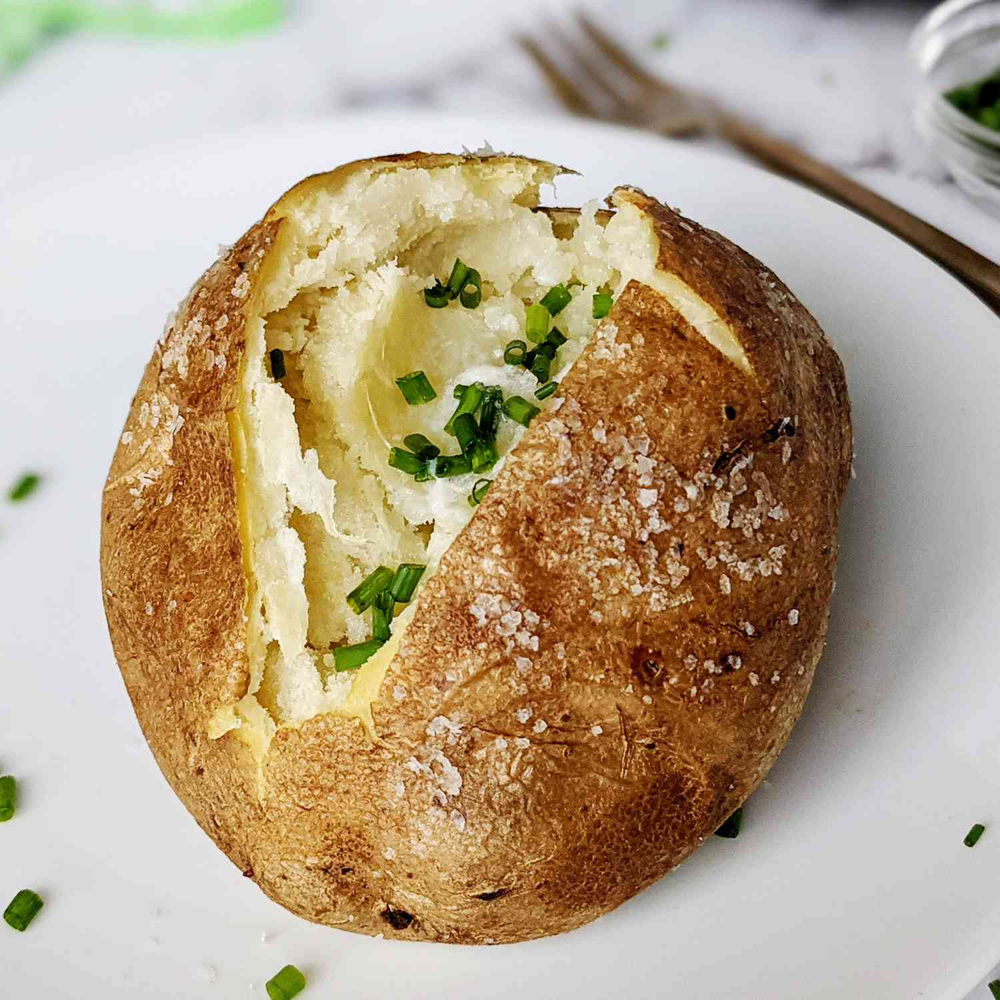

Baked Potato Recipe

Description
This baked potato has a crisp, golden skin, and is light and fluffy on the inside - a perfect baked potato. Serve with a dollop of sour cream if you like. Great comfort food!
Ingredient List
- 1 medium baking potato
- 1 teaspoon olive oil
- 1/2 teaspoon salt
- 2 teaspoons butter
- 1 pinch freshly ground black pepper
- 1/4 cup shredded cheddar cheese
Steps
Gather Ingredients
Season the Potatoes
Start off by rinsing and scrubbing the potatoes. Then, pierce each potato with a fork or knife so that steam can escape when baking. Coat the potato with olive oil (you can use your hands to rub it all over the skin or place the potato and oil in a zip-top bag and shake it up) and season with salt.Bake the Potato
Bake in a 300 degree F oven until the potatoes are tender and golden brown, about 90 minutes.Top Potatoes
Slice the potatoes and fluff the center. Then top with black pepper, butter, Cheddar cheese, chives, sour cream, or anything else you like.